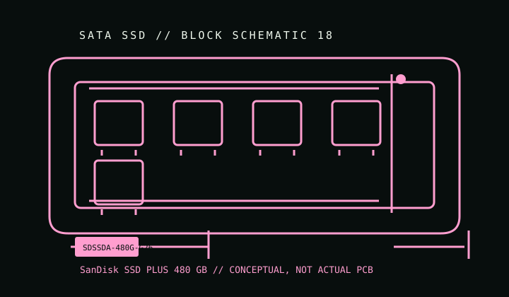

[ INDIVIDUAL COMPONENT // SATA SSD ]
SanDisk SSD PLUS 480 GB
Manufacturer-identified catalog entry for SDSSDA-480G-G26. Capacity-specific ratings apply only to this SKU and revision; they should not be generalized to the product family.

IDENTIFICATION: Match full manufacturer part number SDSSDA-480G-G26, label, capacity, and revision. Retail suffixes/regions and hardware or firmware revisions may vary; do not infer exact internals from the family name.
Specifications
| Manufacturer model / SKU | SDSSDA-480G-G26 |
|---|---|
| Catalog subcategory | Value-oriented SATA SSD models |
| Capacity / generation | 2.5-inch consumer SATA SSD |
| Form factor / interface | 2.5-inch SATA SSD; see the precise dimensional/interface entry in the manufacturer source below. This listed model is not an M.2 NVMe drive. |
| Model-specific details | 480 GB; 2.5-inch SATA III SSD. Manufacturer-published sequential speed figures for this product generation are up to 535 MB/s read and 445 MB/s write. The G26 suffix is retained because speed and internal components can vary across SSD PLUS revisions. |
| Revision variants | Confirm full SKU suffix, assembly/date code, capacity, and firmware from the physical label and manufacturer documentation. Similar family names may conceal different capacities, NAND, or firmware; this entry does not assume interchangeable revisions. |
| TRIM / firmware / host | SATA host required. Do not substitute specifications from other SSD PLUS generation/suffixes. Check current SanDisk/WD support resources for firmware/tool compatibility by full SKU. TRIM requires OS and SATA driver support. |
Preservation & health notes
- Record label/model, serial, firmware, SMART attributes, host/controller, and a read-only health snapshot before changing firmware or configuration.
- Keep verified backups and periodically test stored copies. SSD health indicators and rated TBW are not guarantees of data retention or remaining life.
- Avoid powering or updating a drive with damaged connectors, liquid/corrosion exposure, or unexplained identity/revision differences until assessed; preserve the original labels and firmware state.
- Use the manufacturer's exact-model instructions for firmware, secure erase, encryption, and diagnostic utilities; availability may end when a product is discontinued.
Manufacturer sources
- SanDisk — SSD PLUS SATA III product pageManufacturer product page keyed to the exact SSD PLUS SKU; confirm the G26 label and revision.
Only manufacturer-linked, model-specific documentation is used here. Where a linked page covers a family, exact-SKU comparisons and archived revisions take precedence over the family description.